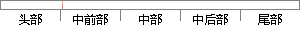

的金属-氧化物-半导体场效应管(MOSFET)
片段位置图

相似结果
相似片段：
(IGBT)、可控硅(SCR)、集成门极换流晶闸管(IGCT)、垂直双扩散金属-氧化物场效应晶体管(VDMOS)、快恢复二极管(FRD)芯片和模块、中小功率智能模块、高电压的金属氧化物半导体场效应管(MOSFET)、传感器、关键光电子器件、新型真空开关管、特种用途真空器件等半导体器件。纳米发电功能器件。光纤激光器件。 2.2.4数字视听与数字家庭产品
| 对比库： | WriteCheck云资源库 |
| 来源： | www.eocgf.com 查看来源 |
| 发布时间： | 2015-12-03 |
| 相似率 | 66.67% （轻度抄袭） |